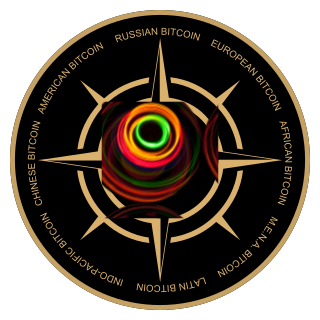

People's monopoly on money and the right of nations to self-bitcoinization
Technological platform National Bitcoin

Annotation
Competition and cultural diversity are the key to development. The existence of economic and political borders between states, countries, provinces, territories is systemically significant.
However, in academic circles, in state, macroeconomic, and monetary policy over the past decades, views of unification (essentially ultra-globalization) have dominated. A unipolar world order and an oligopoly in the global media have hindered the free political expression of people around the world. Unique cultures and entire civilizations risk disappearing. In the heat of the struggle for "diversity" based on skin color, sexual preferences, and genders, real human diversity is dying under the pressure of a global standard. The value crisis is already turning into negative economic consequences. As a result of global labor division, supply chains have become too fragile. Deficits and price increases are becoming increasingly difficult to blame on the pandemic. Despite the efforts of ultra-globalists, centrifugal sentiments are growing in the United States and the European Union. Other countries may follow the same path.
The main weapon of globalists (reserve fiat currencies and the central banks behind them) has lost its effectiveness. The collapse of the dollar "pyramid" has ceased to be hypothetical. The danger of the situation not only creates a window of opportunity but also prompts action for prevention.
National Bitcoin is a socio-engineering, ideological, and technological foundation for a new type of money with comprehensive initial distribution designed for interrelated regional communities. National Bitcoin networks can cushion the shock of the impending economic crisis, global hyperinflation, and country fragmentation, and help establish a new system for organizing human life on the planet.The first phase of the experiment called "Bitcoin" is complete, it's time for the second phase.
However, in academic circles, in state, macroeconomic, and monetary policy over the past decades, views of unification (essentially ultra-globalization) have dominated. A unipolar world order and an oligopoly in the global media have hindered the free political expression of people around the world. Unique cultures and entire civilizations risk disappearing. In the heat of the struggle for "diversity" based on skin color, sexual preferences, and genders, real human diversity is dying under the pressure of a global standard. The value crisis is already turning into negative economic consequences. As a result of global labor division, supply chains have become too fragile. Deficits and price increases are becoming increasingly difficult to blame on the pandemic. Despite the efforts of ultra-globalists, centrifugal sentiments are growing in the United States and the European Union. Other countries may follow the same path.
The main weapon of globalists (reserve fiat currencies and the central banks behind them) has lost its effectiveness. The collapse of the dollar "pyramid" has ceased to be hypothetical. The danger of the situation not only creates a window of opportunity but also prompts action for prevention.
National Bitcoin is a socio-engineering, ideological, and technological foundation for a new type of money with comprehensive initial distribution designed for interrelated regional communities. National Bitcoin networks can cushion the shock of the impending economic crisis, global hyperinflation, and country fragmentation, and help establish a new system for organizing human life on the planet.The first phase of the experiment called "Bitcoin" is complete, it's time for the second phase.
Fiat currencies have stopped to perform the functions of money
Fiat (fiduciary) currencies, which have served as money for half a century, are a tool of policy, not money.
People don't notice it due to habit, but fundamental problems exist. Fiat currencies are constantly being devalued. Bank deposits and money market instruments do not protect against inflation; people are forced to take risks on the stock market. Transactions are monitored everywhere, and the questionable legality of this accumulates public irritation; your fiat money can be "frozen" or confiscated at any time. Payments cannot be made remotely without the intervention of intermediaries who themselves decide which transactions to conduct and which not to. Commission fees are very high.
People don't notice it due to habit, but fundamental problems exist. Fiat currencies are constantly being devalued. Bank deposits and money market instruments do not protect against inflation; people are forced to take risks on the stock market. Transactions are monitored everywhere, and the questionable legality of this accumulates public irritation; your fiat money can be "frozen" or confiscated at any time. Payments cannot be made remotely without the intervention of intermediaries who themselves decide which transactions to conduct and which not to. Commission fees are very high.
Bitcoin have not become money and turned out to be centralized contrary to its original philosophy.
Bitcoin initially seemed like a great solution, but it didn't work out in the end. Bitcoin was expected to become peer-to-peer electronic cash. However, Bitcoin became not money, but another speculative asset.
As of the end of 2021, there were only about nine millionaccounts with a balance equivalent to more than five hundred dollars, and the number of real users (not speculators) is not growing; volatility is very high. The energy costs of mining do not correspond to the perceived social utility of Bitcoin.
It is necessary to take into account mistakes and this time decentralize the new Bitcoin not only in the software code, but also OUTSIDE the protocol. Ensuring the implementation of purely peer-to-peer cash requires not only technological, but also socio-cultural and ideological breakthroughs.
The so-called Bitcoin maximalism was understood by few, although its idea is simple: people with a common cultural code benefit more from having a common army than getting entangled in internecine wars, stealing developers, investors, and users from each other.
Ironically, Bitcoin maximalism, seemingly overthrown, has acquired an unexpected potential ally in light of current global events. National states threatened with destruction by international financial, pharmaceutical, and IT oligopolies will serve as new evangelists. The original idea of Bitcoin may be reborn on the basis of Bitcoin maximalism version 2.0.
As of the end of 2021, there were only about nine millionaccounts with a balance equivalent to more than five hundred dollars, and the number of real users (not speculators) is not growing; volatility is very high. The energy costs of mining do not correspond to the perceived social utility of Bitcoin.
It is necessary to take into account mistakes and this time decentralize the new Bitcoin not only in the software code, but also OUTSIDE the protocol. Ensuring the implementation of purely peer-to-peer cash requires not only technological, but also socio-cultural and ideological breakthroughs.
The so-called Bitcoin maximalism was understood by few, although its idea is simple: people with a common cultural code benefit more from having a common army than getting entangled in internecine wars, stealing developers, investors, and users from each other.
Ironically, Bitcoin maximalism, seemingly overthrown, has acquired an unexpected potential ally in light of current global events. National states threatened with destruction by international financial, pharmaceutical, and IT oligopolies will serve as new evangelists. The original idea of Bitcoin may be reborn on the basis of Bitcoin maximalism version 2.0.
Territorial competition is crusal
Even now, with a significant degree of globalization, the bulk of economic activity by ordinary people is local or national in character. Most people rarely make payments abroad or receive money from overseas. People mainly earn in local enterprises and buy goods in local retail. By and large, the idea of global money is abstract for them.Any sane government will not blindly accept global means of payment within its country, and patriotically-minded elites will be unambiguously hostile to it. Bitcoin cannot be an exception; it too is perceived as a threat. In all countries, authorities are particularly wary of cross-border private payments, as they can finance anti-government activities, terrorism, and crime.
But it is not the criminal world that concerns the authorities most in this regard, but rather the fact that global Bitcoin is convenient for ultra-globalists seeking an extreme form of cultural and economic unification that does not envisage a significant role for national states in the future. In the confrontation between sovereign states and the growing influence of transnational corporations, the former suffer enormous losses. Their officials are bribed. Their citizens are imposed with alien worldviews. They are monitored online. Retailers, social networks, and other IT giants openly plan to introduce their own monetary surrogates, which will deprive all countries of some tax revenue.
The presence of borders is a benefit. Competition between countries is vital.This is a proven, natural mechanism that has worked well throughout all epochs. A state that eliminates competition within itself can drive its citizens into poverty. However, on the international stage, it still represents value by stimulating other countries. The Soviet Union is a prime example. The introduction of an eight-hour workday, recognition of women's rights, the development of atomic energy, the conquest of space, and much more in the West are largely due to the Soviet Union's efforts. And after the collapse of the socialist camp, the union of democratic states began to degenerate rapidly.The erasure of political and economic borders also undermines moral boundaries. The meaning of cultural diversity includes the ability to compare oneself with other people, and therefore, the ability to look at oneself objectively. The dominance of global cultural clichés may have seemed harmless a few decades ago, but today, it has already manifested itself in completely grotesque forms.
But it is not the criminal world that concerns the authorities most in this regard, but rather the fact that global Bitcoin is convenient for ultra-globalists seeking an extreme form of cultural and economic unification that does not envisage a significant role for national states in the future. In the confrontation between sovereign states and the growing influence of transnational corporations, the former suffer enormous losses. Their officials are bribed. Their citizens are imposed with alien worldviews. They are monitored online. Retailers, social networks, and other IT giants openly plan to introduce their own monetary surrogates, which will deprive all countries of some tax revenue.
The presence of borders is a benefit. Competition between countries is vital.This is a proven, natural mechanism that has worked well throughout all epochs. A state that eliminates competition within itself can drive its citizens into poverty. However, on the international stage, it still represents value by stimulating other countries. The Soviet Union is a prime example. The introduction of an eight-hour workday, recognition of women's rights, the development of atomic energy, the conquest of space, and much more in the West are largely due to the Soviet Union's efforts. And after the collapse of the socialist camp, the union of democratic states began to degenerate rapidly.The erasure of political and economic borders also undermines moral boundaries. The meaning of cultural diversity includes the ability to compare oneself with other people, and therefore, the ability to look at oneself objectively. The dominance of global cultural clichés may have seemed harmless a few decades ago, but today, it has already manifested itself in completely grotesque forms.
Decentralization through national borders
Bitcoin networks need to be introduced at the national and regional levels when National Bitcoins of a single network are distributed among citizens of several neighboring states with close ties, who are competing for each other's markets and economically forming a potentially self-sufficient territory. Regional "walls" will reduce the pace of growth of the global oligopoly on the new Bitcoin and may even prevent it. The division into many independent territorial Bitcoin networks is also useful in the context of the scalability problem.
Of course, the network's software protocol knows no borders. It is extremely difficult to organize administrative control to create and maintain separate territories. But this is not necessary: if at least 80% of all coins are released in the first block and immediately distributed to residents of a certain territory, the border of the area will be formed on its own. Along with people's movement, borders will gradually erode, but this will not turn off the main effects of such an act of division into currency zones.
Of course, the network's software protocol knows no borders. It is extremely difficult to organize administrative control to create and maintain separate territories. But this is not necessary: if at least 80% of all coins are released in the first block and immediately distributed to residents of a certain territory, the border of the area will be formed on its own. Along with people's movement, borders will gradually erode, but this will not turn off the main effects of such an act of division into currency zones.
Decentralization through mass coin distribution
At least 80% of the National Bitcoins of each network must be distributed for free at the very beginning on a self-sufficient territory to as many people as possible, as quickly as possible, and equally. The remaining 20% of the emission at most goes to pay for the functioning of the network (mining or its equivalent). A quantum computer-resistant and energy-efficient consensus mechanism already exists..
Mass distribution has deep economic meaning. People who live in territories they can protect, where they produce goods and services, trade and exchange them, are the original source of money, not some abstract emission procedure imposed by a handful of politicians and bureaucrats. Because National Bitcoins are fully distributed among the people, those who usually had the advantage of proximity to the monetary "printing press" do not receive any undeserved privileges.
Free distribution provides clear legal justification for the origin of funds. All National Bitcoins initially arise within a mechanism understandable to everyone.
Network structures gain value and importance with a large number of nodes. The presence of the same accounting unit for a large number of people allows this unit to become money.
Mass distribution has deep economic meaning. People who live in territories they can protect, where they produce goods and services, trade and exchange them, are the original source of money, not some abstract emission procedure imposed by a handful of politicians and bureaucrats. Because National Bitcoins are fully distributed among the people, those who usually had the advantage of proximity to the monetary "printing press" do not receive any undeserved privileges.
Free distribution provides clear legal justification for the origin of funds. All National Bitcoins initially arise within a mechanism understandable to everyone.
Network structures gain value and importance with a large number of nodes. The presence of the same accounting unit for a large number of people allows this unit to become money.
Usefulness for the state and business
Each territory chooses its own way of initial coin distribution.There are at least three ways to create a database of unique living recipients. The first is physical, that is, biometrics. Some projects
(BrightID,
dar.is), go this way and then use them for direct address distribution of coins.The distribution mechanism can be combined with initiatives that are useful for the state and local business.
We will give only three examples.
1. Formally, within national borders, the state has no financial constraints on expenditures if there is a justification for printing money. An unconditional exchange of National Bitcoins by citizens for local fiat currency is an excellent reason for additional issuance,, increasing GDP and domestic demand. Targeted financing can be conveniently carried out through National Bitcoins, and the movement of budget funds can be tracked, and "helicopter money" can be distributed.
2. National Bitcoin can stimulate foreign demand for domestic products. To do this, the government guarantees the redemption of National Bitcoins from local businesses. Their management, knowing that National Bitcoins are already in the hands of foreigners, conducts marketing activities in the corresponding markets. Thus, the state stimulates production and expands the access of domestic enterprises to foreign markets. Authorities who learn to apply the National Bitcoin toolkit will increase their influence. People and businesses will also benefit.
3. To support domestic demand, National Bitcoins can be distributed in the form of discounts and cashbacks. National Bitcoins are a convenient digital currency, ideal for the consumer sector. The ordinary fiduciary national currency will not suffer: dual-circuit monetary systems have proven their effectiveness.The current division of the world into new zones of political influence creates competition among currencies for the right to become reserves. Using National Bitcoins in tandem with national fiat currency increases its chances of becoming a reserve currency.
We will give only three examples.
1. Formally, within national borders, the state has no financial constraints on expenditures if there is a justification for printing money. An unconditional exchange of National Bitcoins by citizens for local fiat currency is an excellent reason for additional issuance,, increasing GDP and domestic demand. Targeted financing can be conveniently carried out through National Bitcoins, and the movement of budget funds can be tracked, and "helicopter money" can be distributed.
2. National Bitcoin can stimulate foreign demand for domestic products. To do this, the government guarantees the redemption of National Bitcoins from local businesses. Their management, knowing that National Bitcoins are already in the hands of foreigners, conducts marketing activities in the corresponding markets. Thus, the state stimulates production and expands the access of domestic enterprises to foreign markets. Authorities who learn to apply the National Bitcoin toolkit will increase their influence. People and businesses will also benefit.
3. To support domestic demand, National Bitcoins can be distributed in the form of discounts and cashbacks. National Bitcoins are a convenient digital currency, ideal for the consumer sector. The ordinary fiduciary national currency will not suffer: dual-circuit monetary systems have proven their effectiveness.The current division of the world into new zones of political influence creates competition among currencies for the right to become reserves. Using National Bitcoins in tandem with national fiat currency increases its chances of becoming a reserve currency.
Implementation. The Role of the National Bitcoin Community
Each territory chooses its own way of initial coin distribution.There are at least three ways to create a database of unique living recipients. The first is physical, that is, biometrics. Some projects
(BrightID,
dar.is), go this way and then use them for direct address distribution of coins.The distribution mechanism can be combined with initiatives that are useful for the state and local business.
We will give only three examples.
1. Formally, within national borders, the state has no financial constraints on expenditures if there is a justification for printing money. An unconditional exchange of National Bitcoins by citizens for local fiat currency is an excellent reason for additional issuance,, increasing GDP and domestic demand. Targeted financing can be conveniently carried out through National Bitcoins, and the movement of budget funds can be tracked, and "helicopter money" can be distributed.
2. National Bitcoin can stimulate foreign demand for domestic products. To do this, the government guarantees the redemption of National Bitcoins from local businesses. Their management, knowing that National Bitcoins are already in the hands of foreigners, conducts marketing activities in the corresponding markets. Thus, the state stimulates production and expands the access of domestic enterprises to foreign markets. Authorities who learn to apply the National Bitcoin toolkit will increase their influence. People and businesses will also benefit.
3. To support domestic demand, National Bitcoins can be distributed in the form of discounts and cashbacks. National Bitcoins are a convenient digital currency, ideal for the consumer sector. The ordinary fiduciary national currency will not suffer: dual-circuit monetary systems have proven their effectiveness.The current division of the world into new zones of political influence creates competition among currencies for the right to become reserves. Using National Bitcoins in tandem with national fiat currency increases its chances of becoming a reserve currency.
We will give only three examples.
1. Formally, within national borders, the state has no financial constraints on expenditures if there is a justification for printing money. An unconditional exchange of National Bitcoins by citizens for local fiat currency is an excellent reason for additional issuance,, increasing GDP and domestic demand. Targeted financing can be conveniently carried out through National Bitcoins, and the movement of budget funds can be tracked, and "helicopter money" can be distributed.
2. National Bitcoin can stimulate foreign demand for domestic products. To do this, the government guarantees the redemption of National Bitcoins from local businesses. Their management, knowing that National Bitcoins are already in the hands of foreigners, conducts marketing activities in the corresponding markets. Thus, the state stimulates production and expands the access of domestic enterprises to foreign markets. Authorities who learn to apply the National Bitcoin toolkit will increase their influence. People and businesses will also benefit.
3. To support domestic demand, National Bitcoins can be distributed in the form of discounts and cashbacks. National Bitcoins are a convenient digital currency, ideal for the consumer sector. The ordinary fiduciary national currency will not suffer: dual-circuit monetary systems have proven their effectiveness.The current division of the world into new zones of political influence creates competition among currencies for the right to become reserves. Using National Bitcoins in tandem with national fiat currency increases its chances of becoming a reserve currency.